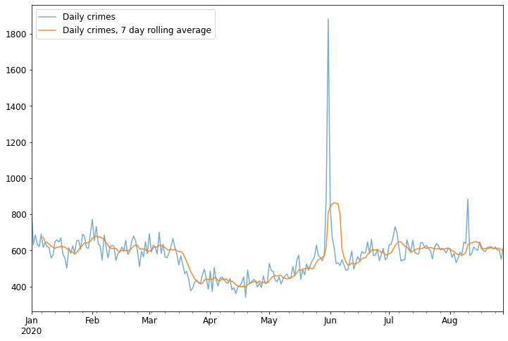
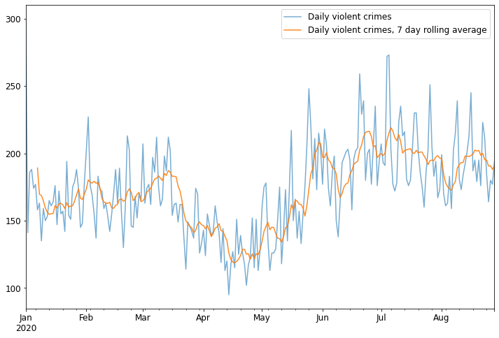
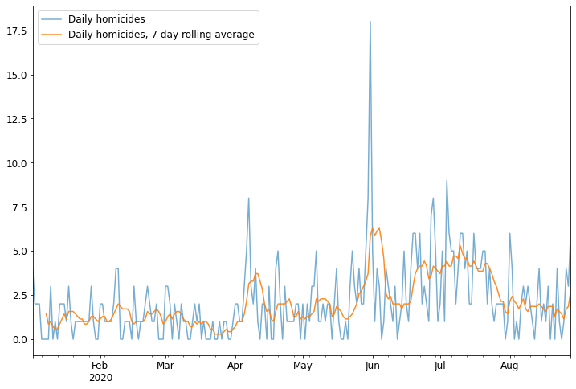

Crime in Chicago, so far in 2020
I realized that I was doing things the hard way when I made my map of crime in Hyde Park -- the City of Chicago has an excellent site where they make available all sorts of data -- including crime data -- in various formats. The best part is that each event is pre-labeled with GPS coordinates, so not only did I not need to scrape the website for the data, I didn't have to geocode the events either. I downloaded all of the data for 2020 up to now (early September) and made a few visualizations as an extension of my Hyde Park project. (I would have used all the data they have, since 2001, but my little laptop was not having fun chugging through the 7 million+ observations in there, and I figured the 2020 data will give a more current picture, anyway.)
The first thing I made was this attractive-looking map of where crimes are concentrated. It's a log-scale hex-bin map of almost the entire city (reddish colors indicate more crimes per area). I honestly want to hang this on my wall; it's very interesting to look at closely (of course, that's just me being a map nerd).
{kind=link}
You can see that Hyde Park seems to exist in a little bubble of crime, which is not surprising. Downtown has the highest concentration of crimes, which is surprising based on the fact that people there tend to be more wealthy than the average person in the city, but not surprising based on the fact that the concentration of people there is considerably higher than anywhere else in the city. I'm sure the looting that's been occuring of the past few months has also contributed to that. The large sections of the city where mainly economically disadvantaged, African American people live have very high rates of crime. On the other hand, the sections of the city dominated by Latin Americans have relatively low crime rates (compare with this excellent map from Wikipedia). The mostly-white suburbs have low crime rates.
{kind=link}
The non-log-scaled version is also helpful for identifying especially high-crime areas:
{kind=link}
I also filtered the data to look only and violent crimes and see if there was any significant difference between the distribution of these crimes and the overall distribution.
{kind=link}
There doesn't seem to be too much of a difference here, although it looks like the distrubution of violent crime might have more to do with the neighborhood and less to do with the population density; I'd have to do a more careful analysis with population data on hand to be sure, though.
The last thing I did was to take a look at how the crime rates have changed throughout the year.
{kind=link}
This is interesting. You can see a sizable lull in April and May, I'm guessing due to lockdown restrictions that kept people in their houses. The Black Lives Matter protests at the end of May and beginnning of June show up very clearly, as does the looting in early August.
Again, I broke down the data by type of crime as well. Here's the timeline for violent crimes:
{kind=link}
And here are the data for just homicides:
{kind=link}
These last two provide some interesting insights into how the dynamics of crime have changed since the COVID-19 lockdowns. Even though overall crime was down in April and May, homicides were significantly elevated (at least compared to the previous months; I'd have to look at data from years before to know what is typical for the season). Overall crime is still down compared to the beginning of the year, but violent crime has, since the beginning of June, been above what it was at the beginning of the year.